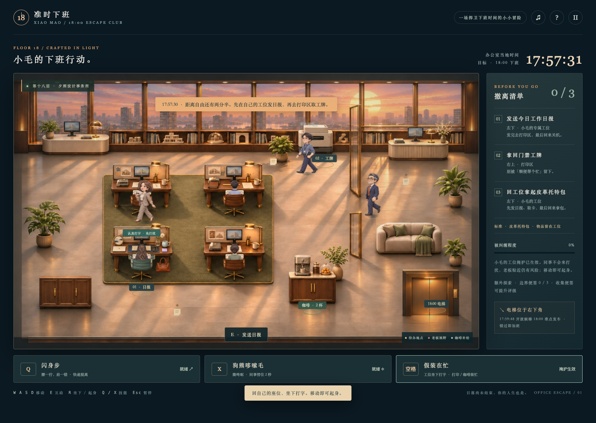
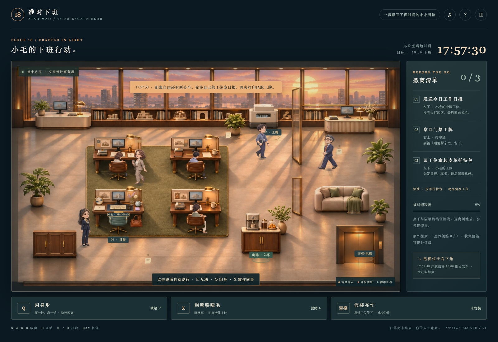
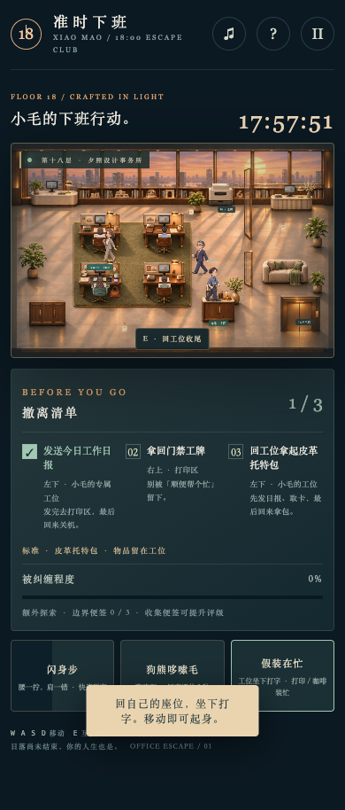

THE 18:00 ESCAPE CLUB / V5
坐下，认真打字。
小毛与三位同事正对电脑。回到自己的座位坐下打字，建立免打扰掩护；移动即可起身，继续争取六点准时下班。

R自动回座、再按起身；在工位旁按空格或点击自己的椅子也可坐下。落座后0.55秒建立掩护，普通同事放弃追逐，老板贴近仍有风险。关机拿包后无法继续坐班。时间正常流逝。

V4 · 原侧身坐姿V5 · 肩膀、头部正对显示器触屏操作

真实运行验证
标准托特模式真实150秒完成三项收尾与18:00通关；新增坐班掩护、移动起身、技能起身、暂停、手机操作均通过。原生Safari/iOS及老板贴近打断分支尚待专项实测。
旧版本、素材与记录保留。2026-11-12阶段交付；用户已确认本次GitHub发布。